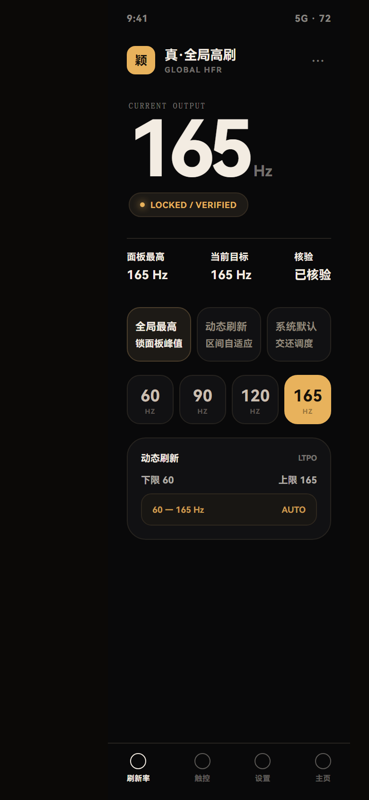

固定档位
扫描 SurfaceFlinger 模式，只显示设备真实拥有的 60–185Hz；没有的档位置灰，不写无效值。
不是只写一个 settings 就自称全局。能力自检、底层锁、回读核验、动态 LTPO、触控加速，按每一台手机真实支持的能力工作。
免费 · 无广告 · 不收集数据 · 总下载 28 次

围绕“真的生效”做完整闭环，而不是堆一排看起来很强的开关。
扫描 SurfaceFlinger 模式，只显示设备真实拥有的 60–185Hz；没有的档位置灰，不写无效值。
原生模式只设置 min/peak，让系统按画面内容调度；自适应模式在触控时升到上限，静止回落。
Xiaomi 走 SurfaceFlinger 1035，其他系统走 DisplayManager / Settings；每一层都回读核验。
只写存在且写入成功的节点；没有的节点不补假项。触控 HAL 优先级、input boost 按机型生效。
开机自启、息屏亮屏重锁、设置漂移检测；所有改动写前备份，卸载逐项还原。
状态、档位、动态区间、触控、自检、日志都在一个页面；支持 KernelSU / APatch，Magisk 用 KsuWebUI。
peak_refresh_rate / min_refresh_rate，小米 / 澎湃额外处理 user_refresh_rate。
SurfaceFlinger 1035 钉住显示模式，压住应用帧率投票；不支持时自动回退。
读实际刷新率和 active mode，没到目标就重试；仍失败标“未核验”，不假装成功。
原生动态只设区间，不写厂商固定键；固定档才写。动态和固定分开，避免把 LTPO 锁死。
实时状态、档位、动态区间、触控节点和日志，都在一个安静的面板里。
“更新后动态锁 120”不是 UI 猜的，是厂商固定键 + 每 15 秒重写区间。v2.2.10 已经停掉。
— 维护记录只支持通过 Root 管理器安装；刷入后需要重启一次。
Magisk / KernelSU / APatch → 从本地安装 → 选择 zip。
首次开机自动应用面板最高档；之后在 WebUI 改固定 / 动态。
KernelSU / APatch 模块页直接打开；Magisk 装 KsuWebUI 并授予 Root。
守护进程先读当前 min/peak，只有被改掉时才补写。日志里不会再每 15 秒出现一次 native range。
原生 LTPO 不再每 15 秒被顶回峰值。
动态不再写 miui / oplus 固定刷新率，恢复区间调度。
status 约 0.8KB，触摸节点按需读取，降低“未连接”。
165Hz 面板不再被 120 模式表误判。
机型兼容、锁不住、掉 60、触控节点……统一发到 GitHub Issue，支持截图和评论回复。
建议附：手机型号 / ROM / 模块版本 / 复现步骤 / 兼容性自检 / 运行日志。不要填写 IMEI、序列号等隐私信息。
v2.2.5 曾把 miui_refresh_rate 写成峰值，等于硬锁；v2.2.9 起清除厂商固定键，v2.2.10 停止每 15 秒重写区间。
ColorOS 有 extremeHighRate 白名单，应用不在列表里系统就不给 165。模块不会假装突破。
模块只写真实存在且写入成功的节点；没有的 boost 接口不会补假项。只有触控 HAL 生效说明内核就暴露了这一个入口。
WebUI → 设置 → 恢复系统默认，或卸载模块后重启；改动都有备份。